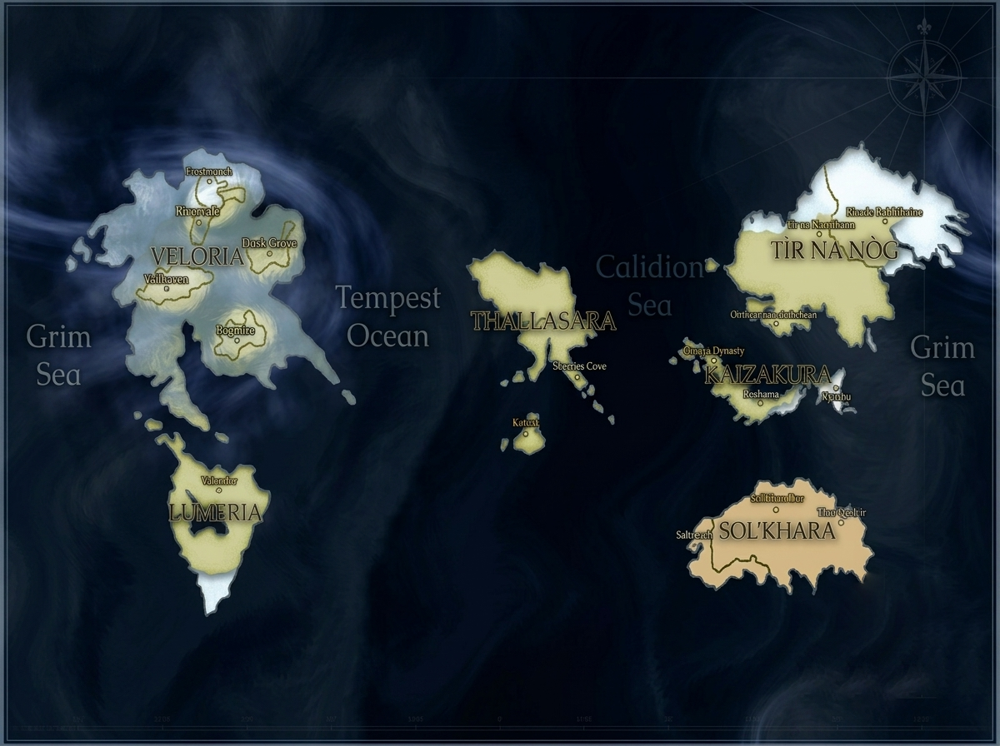
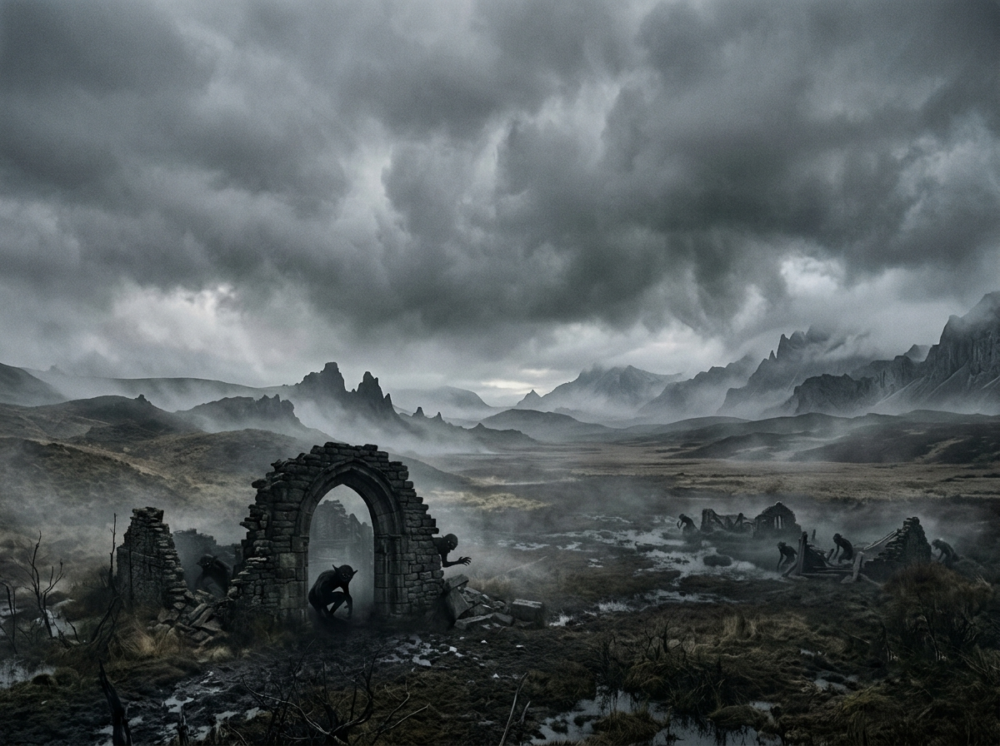
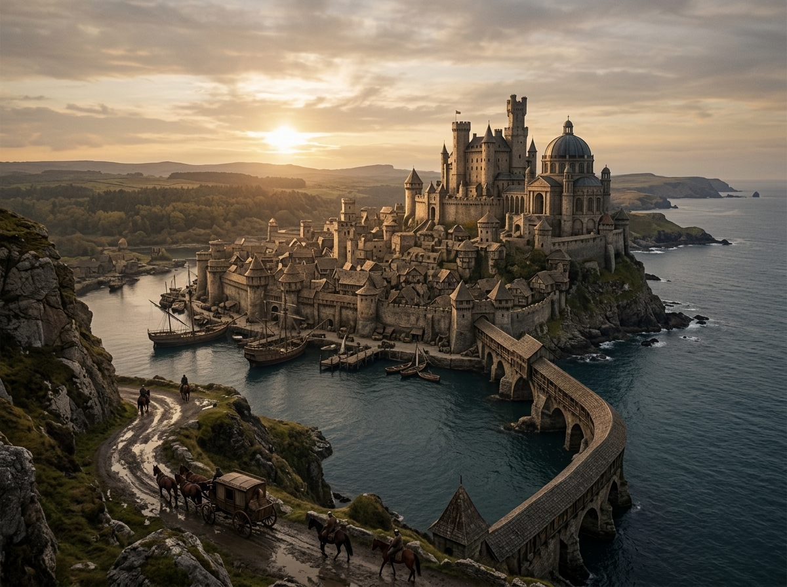
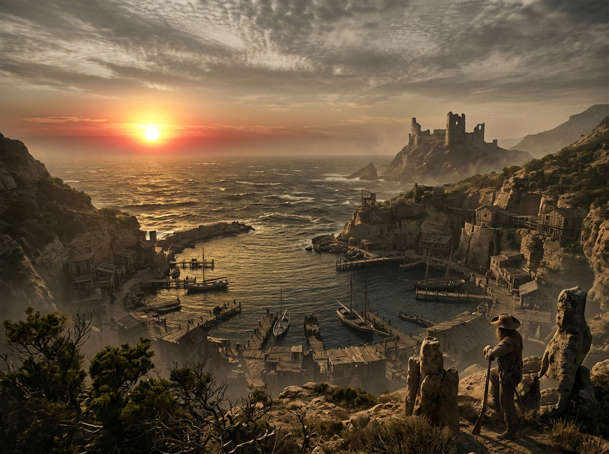
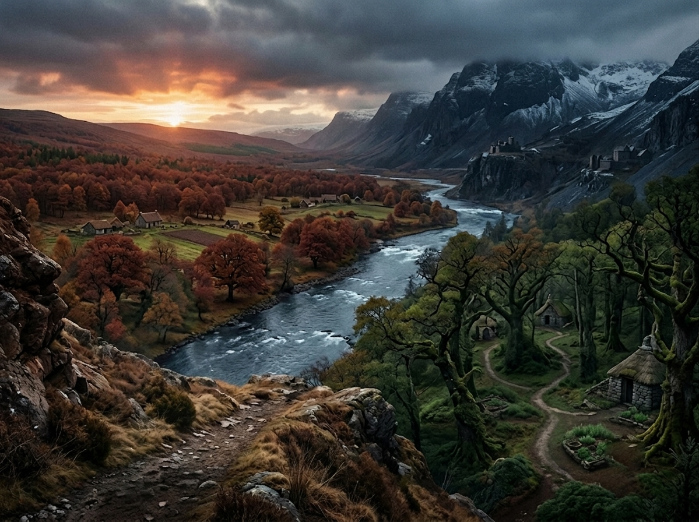
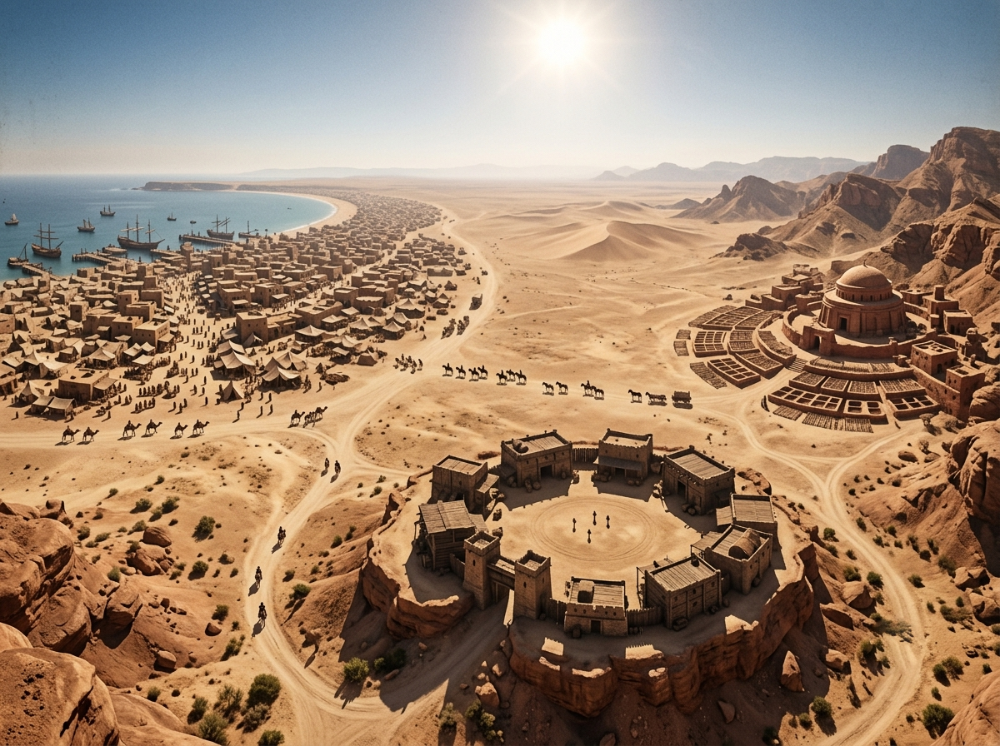
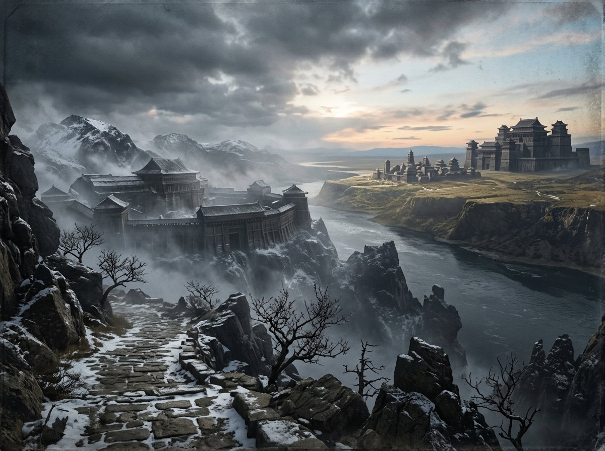

SERVER LOREMedieval Online RP · Thailand
บันทึกแห่งโลกเอิร์ด (The Erde Compendium)

สำหรับผู้ที่เดินทางผ่านดินแดนเหล่านี้มาอย่างโชกโชน ข้อมูลในหนังสือเล่มนี้อาจเป็นเรื่องพื้นฐานที่รู้อยู่เต็มอก แต่สำหรับบางคน มันอาจต้องใช้เวลาปรับตัวอยู่บ้าง ไม่ว่าท่านจะเป็นนักเดินทางผู้เจนโลกหรือผู้มาเยือนหน้าใหม่ บันทึกเล่มนี้จะช่วยให้ท่านปรับตัวเข้ากับ "เอิร์ด" (Erde) โลกของเราได้ง่ายขึ้น
ความรู้ทั้งหมดในหนังสือเล่มนี้ผ่านการศึกษาและรวบรวมมาจาก สำนักเมสเตอร์ (School of Maesters) แม้ทางสำนักจะตระหนักดีว่าความรู้หลายอย่างอาจเป็นเพียงเรื่องเล่าตามสถานการณ์ ข่าวลือ หรือความเชื่อปรัมปรา แต่หนังสือเล่มนี้ก็ถือเป็นแหล่งข้อมูลที่แม่นยำที่สุดเท่าที่หาได้ในปัจจุบัน
เขียนโดย: เซเรน สโตน (Seren Stone)

ยินดีต้อนรับสู่ Erde (The Erde Compendium)
เอิร์ด (Erde) คือโลกอันงดงามที่เราอาศัยอยู่ เป็นโลกที่โอบอุ้มทุกสิ่งที่เราต่างรู้จัก ค้นหา หวงแหน และรักใคร่ มันเป็นบ้านของทั้งความดีงามและความชั่วร้ายทั้งปวง แต่เหนือสิ่งอื่นใด โลกใบนี้คือบ้านของ "พวกท่าน"
เอิร์ดประกอบด้วย 6 ทวีป แม้ว่าแผนที่ที่แม่นยำจะหาได้ยากยิ่ง แต่เหล่านักวาดแผนที่ของเราก็พอจะเข้าใจโครงสร้างของแผ่นดิน และได้จำลองภาพแผนที่ทวีปต่าง ๆ บนโลกกลม ๆ อันงดงามใบนี้ไว้ให้เราได้เห็นกัน

ทวีป เวโลเรีย (Veloria)
หรือที่รู้จักกันในนาม "ดินแดนแห่งม่านหมอก" หรือในอดีตเรียกว่า "แผ่นดินที่ไร้ผู้ครอบครอง"
มีเพียงพื้นที่บางส่วนในทวีปนี้เท่านั้นที่มนุษย์สามารถอยู่อาศัยได้ แม้จะมีผู้ตั้งถิ่นฐานบางกลุ่มเดินทางฝ่า "ลมพายุวิญญาณคลั่ง" (Wraithwind) ไปได้สำเร็จ แต่ผู้คนรุ่นหลังที่อาศัยอยู่ในพื้นที่หลบภัยเหล่านั้นกลับไม่เคยได้เดินทางกลับออกมาเลย หรือหากจะทำเช่นนั้นก็ต้องใช้ความพยายามอย่างมหาศาลหรือใช้เงินทองจำนวนมาก
มีข่าวลือว่าเวโลเรียเป็นที่อยู่อาศัยของสิ่งมีชีวิตลึกลับมากมาย แต่เพราะพายุวิญญาณคลั่งที่โหมกระหน่ำ ทำให้การพิสูจน์ข้อเท็จจริงเป็นไปได้ยากยิ่ง อย่างไรก็ตาม เคยมีการติดต่อกับสิ่งมีชีวิตที่เรียกว่า "ก็อบลิน" อยู่บ้างในพื้นที่หลบพายุที่เรียกว่า "บ็อกไมร์"
การแผ่ขยายอิทธิพลของลูเมเรีย: หลายร้อยปีก่อน ในยุคที่ลูเมเรียรุ่งเรืองและแผ่ขยายอาณาเขตเข้ามายังเวโลเรีย ราชาเรวอน แลเนริส ที่ 3 ได้ส่งโอรสองค์ที่สองคือ เจย์มาร์ แลเนริส นำคณะเมสเตอร์และประชาชนผู้มีความสามารถเดินทางจากลูเมเรียเข้าสู่เวโลเรีย เพื่อสำรวจ วาดแผนที่ และขยายอาณาจักรวาเลนดอร์
ทว่ามันเป็นภารกิจที่แทบจะเป็นไปไม่ได้ บังคับให้คณะเดินทางต้องสร้าง "อาณาจักรใต้ดิน" เพื่อหลบซ่อนจากพายุวิญญาณคลั่งที่พวกเขาเชื่อว่าจะสงบลงในไม่ช้า พวกเขาอาศัยอยู่ใต้ดินโดยไม่มีใครกล้าก้าวเท้าออกสู่โลกภายนอกเป็นเวลาหลายร้อยปี จนขาดการติดต่อกับวาเลนดอร์ไปในที่สุด ปัจจุบันเราเหลือเพียงม้วนคัมภีร์บางส่วนที่กู้คืนมาจากซากปรักหักพังใต้ดินเท่านั้น
มีข่าวลือว่าสายเลือดของแลเนริสถูกสั่นคลอนโดยกลุ่มที่เรียกตนเองว่า "สมาคมขุนนาง" ที่ต้องการยึดอำนาจและบีบให้ผู้คนกลับขึ้นมาใช้ชีวิตบนดิน พวกเขาทำสำเร็จด้วยการทำลายกำแพงและโครงสร้างใต้ดินหลายจุด บังคับให้ผู้รอดชีวิตต้องอพยพไปอยู่ในห้องนิรภัยของเมสเตอร์ ก่อนจะตัดสินใจฝ่าพายุวิญญาณคลั่งออกไป เชื่อกันว่าผู้รอดชีวิตกลุ่มสุดท้ายนี้คือผู้ร่วมกันก่อตั้ง อาณาจักรฟรอสต์มาร์ช (Frostmarch) และ ริเวนเวล (Rivenvale) ซึ่งยังคงทำสงครามแย่งชิงดินแดนกันมาจนถึงทุกวันนี้
OOC แรงบันดาลใจทางภาษาและวัฒนธรรม: ภาษาอังกฤษ, ฝรั่งเศส, อิตาลี (เขียนเนื้อเรื่องตัวละครเริ่มต้นที่ทวีปนี้เท่านั้น)

ทวีป ลูเมเรีย (Lumeria)
ทวีปที่รู้จักกันในนาม "ชายฝั่งแห่งเวทมนตร์" (Arcane Coast) ปกครองโดยอาณาจักรวาเลนดอร์ ประชาชนชาวลูเมเรียมีชีวิตความเป็นอยู่ที่ดี มั่งคั่ง มีการศึกษา และมีสุขอนามัยที่ดีเยี่ยม
ลูเมเรียคือศูนย์กลางแห่งความรู้และเป็นที่ตั้งของสำนักเมสเตอร์ เล่ากันว่ามีผู้คนมากมายพยายามเดินทางมายังลูเมเรียเพื่อตามหาศาสตร์ลี้ลับ แต่ส่วนใหญ่กลับไม่มีใครได้เดินทางกลับไปอีกเลย
เชื่อกันว่าผู้ตั้งถิ่นฐานยุคแรกเริ่มของลูเมเรียเดินทางมาจากทวีป "ทีร์ นัน ออก" (Tìr na nÓg) โดยพยายามล่องเรือไปทางตะวันออกข้ามทะเลทมิฬ (Grim Sea) เพื่อไปยังเวโลเรีย แต่พายุวิญญาณคลั่งพัดเบี่ยงทิศทางให้พวกเขาล่องลงใต้จนได้มาพบกับทวีปลูเมเรียแทน
วาเลนดอร์ (Valendor): หนึ่งในอาณาจักรที่ร่ำรวยที่สุด ตั้งอยู่ในเมืองที่ใหญ่ที่สุดเมืองหนึ่งบนโลกเอิร์ดที่ชื่อว่า "เดอะ ซิทาเดล" ราชวงศ์แลเนริสปกครอง ลูเมเรียมาอย่างยาวนานเท่าที่มีการบันทึกประวัติศาสตร์ เมืองนี้มีโรงเรียนตั้งอยู่มากมาย รวมถึงมีช่างฝีมือชาวบ้านที่คอยตีดาบและสร้างเครื่องมือชั้นยอดส่งออกไปทั่วโลก
สำนักเมสเตอร์ (The School of Maesters): หนึ่งในสมาคมที่เก่าแก่และมีอิทธิพลที่สุดในโลก ถือกำเนิดขึ้นในวาเลนดอร์ เมื่อวัฒนธรรมของวาเลนดอร์แผ่ขยายและเกิดอาณาจักรใหม่ ๆ สมาคมเมสเตอร์จึงถูกตั้งขึ้นเพื่อช่วยให้อาณาจักรเหล่านั้นดำเนินไปได้อย่างมีประสิทธิภาพและมีเกียรติ ราชวงศ์หรือขุนนางส่วนใหญ่มักจะส่งบุตรคนที่หนึ่งหรือสองเข้าเรียนที่นี่ตั้งแต่ยังเด็ก เมสเตอร์ทำหน้าที่เป็นตัวกลางระหว่างอาณาจักร คอยช่วยให้แต่ละดินแดนรุ่งเรืองในแบบของตัวเอง คอยให้คำแนะนำกษัตริย์ในการหลีกเลี่ยงความขัดแย้ง แต่หากเกิดสงครามขึ้นจริง ๆ ก็จะอยู่นอกเหนือความรับผิดชอบของพวกเขา เพราะหน้าที่หลักคือการรักษาความสงบเรียบร้อยภายในอาณาจักรที่ตนได้รับมอบหมายเท่านั้น เมสเตอร์ถือเป็นบุคคลที่ได้รับการคุ้มครองอย่างสูงและมีอำนาจมาก เพราะได้รับการสนับสนุนจากหลายอาณาจักร รวมถึงกองทัพของวาเลนดอร์เอง
OOC แรงบันดาลใจทางภาษาและวัฒนธรรม: ภาษาอังกฤษ และอิตาลี

ทวีป ธัลลาซารา (Thallasara)
หรือที่รู้จักกันในชื่อ "ดวงตาแห่งมหาสมุทร" (Ocean's Eye) ขนาบข้างด้วยมหาสมุทรเทมเพสต์ และทะเลคาลิเดียน ประชากรส่วนใหญ่อาศัยอยู่ตามแนวชายฝั่ง
พื้นที่ส่วนใหญ่ประกอบไปด้วยเกาะและอาณาจักร "คาราวี" และชุมชนชายฝั่งที่ชื่อว่า "อ่าวสคูรอส" ดินแดนแห่งนี้โดดเด่นเรื่องวัฒนธรรมการเดินเรือ สัตว์แปลก และผลไม้เมืองร้อน
คาราวี (Káravi): อดีตผู้ปกป้องน่านน้ำมหาสมุทรเทมเพสต์และทะเลคาลิเดียนเพียงหนึ่งเดียว คอยดูแลการค้าขายที่ยุติธรรมระหว่างทวีป แต่ปัจจุบันสูญเสียอำนาจควบคุมเส้นทางการค้าเหล่านี้ให้แก่โจรสลัดแห่งอ่าวสคูรอส ถึงกระนั้นพวกเขาก็ยังขึ้นชื่อเรื่องการต่อเรือและการสร้างป้อมปราการชายฝั่ง ปัจจุบันยังคงค้าขายสินค้า สัตว์แปลก เครื่องเทศ และเรือกับท่าเรือ "ซอลท์รีช" ของทวีปซอลคารา
อ่าวสคูรอส (Skoúros Cove): ดินแดนอันตรายที่เต็มไปด้วยเหล่าโจรสลัดผู้ขึ้นชื่อเรื่องการเดินเรือที่รวดเร็วที่สุดในน่านน้ำ และเป็นฆาตกรเหี้ยมโหดที่กระหายอำนาจ อาณาจักรคาราวีต่อสู้กับกลุ่มโจรเหล่านี้มาอย่างยาวนาน ชุมชนแห่งนี้เติบโตขึ้นเรื่อย ๆ โดยมีประชากรเป็นผู้คนจากทั่วทุกสารทิศของโลกเอิร์ดมารวมตัวกัน
OOC แรงบันดาลใจทางภาษาและวัฒนธรรม: ภาษาสเปนยุคกลาง, กรีกโบราณ

ทวีป ทีร์ นัน ออก (Tír na nÓg)
หรือ "ดินแดนแห่งความเยาว์วัย" ดินแดนที่เป็นต้นกำเนิดของตำนานพื้นบ้านและเรื่องเล่าปรัมปรามากมาย เหล่าผู้เชื่อในศาสตร์แม่มดเชื่อว่าแหล่งพลังของพวกเขาอยู่ที่นี่ ประชากรส่วนใหญ่ของโลกเอิร์ดเชื่อว่ามีต้นกำเนิดมาจากทวีปนี้ก่อนจะกระจายไปทั่วโลก แม้แต่อาณาจักรวาเลนดอร์ก็ยอมรับว่าบรรพบุรุษของพวกตนมาจากที่นี่เช่นกัน
ริออค ดัฟทาเนอ (Riocht Dubhthaine): หรือ "อาณาจักรแห่งเงา" (The Kingdom of Shadow) ดินแดนที่มีฤดูหนาวยาวนานและหนาวเหน็บ ส่วนฤดูร้อนนั้นสั้นเสียจนแทบไม่ได้เห็นแสงตะวัน พวกเขากำลังทำศึกแย่งชิงดินแดนกับ "ทีร์ นา คอร์ทัน" (Tir na Coarthann) อย่างดุเดือด ชายฝั่งตะวันออกของอาณาจักรนี้อยู่ใกล้กับเวโลเรีย จึงได้รับผลกระทบจากพายุวิญญาณคลั่ง ผู้คนที่นี่จึงมีความเชื่อที่หลากหลายและแตกต่างกันเกี่ยวกับพายุ ธรรมชาติ และน้ำแข็ง เล่ากันว่านักรบที่แข็งแกร่งที่สุดในโลกบางคนมาจากที่นี่ พวกเขาสวมชุดขนสัตว์และเครื่องประดับโลหะเพื่อแสดงอำนาจและสร้างความอบอุ่นให้กับร่างกาย
ทีร์ นา คอร์ทัน (Tìr na Caorthann): หรือ "อาณาจักรสีชาด" (The Red Kingdom) ตั้งชื่อตามต้นโรวัน (Rowan trees) ที่ขึ้นปกคลุมหนาแน่น (บางคนเรียกต้นไม้นี้ว่า ต้นไม้ดรูอิด ต้นไม้แม่มด หรือ "ผู้มีสีแดง") วัฒนธรรมของที่นี่ผูกพันกับชีวิต ธรรมชาติ และการเติบโต พวกเขามีความเชื่อเรื่องภูตผี (Fae) และแม่มด ซึ่งอาณาจักรอื่นมองด้วยความเคลือบแคลงสงสัยหรือไม่ยอมรับ พวกเขานับถือ "พระแม่ธรรมชาติ" (Mother Nature) ซึ่งเป็นเทวทูตที่เชื่อมโยงกับพืชพรรณ ชีวิต และโลกเอิร์ด
ออยเธอร์ นัน ซีฮิเชียน (Oirthir nan sìthichean): หรือ "ดินแดนแห่งภูต" (The Fae-Lands) เป็นส่วนหนึ่งของทีร์ นา คอร์ทัน ที่ซึ่งเหล่าดรูอิดและผู้เลื่อมใสมักเดินทางมาเพื่อแสวงหาความหลุดพ้น พวกเขาสร้างสังคมที่พึ่งพาธรรมชาติ และเชื่ออย่างแรงกล้าว่า "การทำร้ายแผ่นดินคือการทำร้ายพระแม่ธรรมชาติ" จึงต้องมีการทำพิธีกรรมต่าง ๆ เพื่อชดใช้หนี้และทดแทนคุณให้กับธรรมชาติเสมอ
OOC แรงบันดาลใจทางภาษาและวัฒนธรรม: ภาษาเกลิกสกอตแลนด์, ภาษาเกลิกไอร์แลนด์, สแกนดิเนเวีย, ยุโรปตะวันออก

ทวีป ซอล'คารา (Sol'Khara)
หรือ "อาณาจักรแห่งดวงอาทิตย์" (The Sunrealm) ดินแดนที่ร้อนระอุและเต็มไปด้วยทะเลทรายอันกว้างใหญ่ ผู้ตั้งถิ่นฐานส่วนใหญ่อาศัยอยู่บริเวณขอบตะวันออกของทวีป ส่วนผู้ที่อาศัยอยู่ลึกเข้าไปในทะเลทรายนั้นแทบไม่มีใครเคยพบเห็น
ซอลท์รีช (Saltreach): ชุมชนขนาดใหญ่บนชายฝั่งตะวันตก ทอดยาวตั้งแต่เหนือจรดใต้ตามแนวชายฝั่ง ที่นี่ไม่ได้ปกครองแบบอาณาจักร แต่เป็นเมืองท่าค้าขายที่คึกคักและขับเคลื่อนโดยประชาชนอย่างสมบูรณ์ มีการประมูลเรือ แลกเปลี่ยนเครื่อง spices สัตว์ และพืชพรรณแปลก ๆ ผู้คนที่เกิดที่นี่จะถูกเรียกว่า "ซันบอร์น" (The Sunborn - ผู้เกิดจากดวงอาทิตย์) แต่ก็มีคนจากหลากหลายวัฒนธรรมย้ายมาทำงานที่นี่ ผู้คนที่นี่แทบจะไม่เดินทางลึกเข้าไปในทะเลทรายทางตะวันออกเลย
ซอล'ข่าน'ดาร์ (Sol'Khan'Dar): ชุมชนขนาดใหญ่ที่เป็นที่อยู่อาศัยของชาว "ซอลคาริ" (Solkari) นักรบผู้ทรงพลังที่คนภายนอกมักมองว่าเป็นพวกป่าเถื่อน วัฒนธรรมของพวกเขายึดถือความแข็งแกร่งและพลังอำนาจเป็นหลักในการปกครองตนเอง พวกเขาไม่ค่อยสุงสิงกับใครและน้อยครั้งที่จะมีคนเห็นนอกทวีป หลายคนหวาดกลัวว่าพวกเขาคือเพชฌฆาตที่โหดเหี้ยมที่ควรหลีกเลี่ยงให้ไกล
ธาร์'เคชิน (Thar'Qeshin): กลุ่มคนที่แตกต่างจากชาวซอล'คารา พวกเขาใช้ชีวิตอย่างโดดเดี่ยวและพึ่งพาตนเอง มีความเชี่ยวชาญระดับสูงในการถนอมอาหารและการควบคุมอุณหภูมิร่างกายในที่ร้อนจัด พวกเขานับถือเทพแห่งดวงอาทิตย์ และบางครั้งอาจพบเห็นพวกเขาเดินทางมาค้าขายในซอลท์รีชบ้าง
OOC แรงบันดาลใจทางภาษาและวัฒนธรรม: ภาษาอังกฤษ, อาหรับ, สเปน (สำหรับซอลท์รีช) / ภาษาทะเลทรายซาฮาราและภาษาโดธราคีจาก Game of Thrones (สำหรับซอล'ข่าน'ดาร์) / ภาษาอังกฤษและอาหรับ และกลุ่มเฟรเมนจาก Dune (สำหรับธาร์'เคชิน)

ทวีป ไคซากุระ (Kaizakura)
ดินแดนที่เป็นที่ตั้งของ "ราชวงศ์อุมิยะ" (Umiya Dynasty) ประกอบไปด้วยเมืองสำคัญอย่าง เป่ยจง (Beizhong) และ เฮียวเคียว (Hyōkyō) ทวีปนี้ตั้งอยู่ใกล้กับทวีปอื่นอีกสองทวีป แต่พวกเขาก็ป้องกันชายแดนและรักษาเอกราชไว้อย่างเหนียวแน่น วัฒนธรรมของที่นี่เน้นเรื่องการเคารพบรรพบุรุษและเกียรติยศอย่างสูงส่ง
ราชวงศ์อุมิยะ (Umiya Dynasty): มีกองทัพที่แข็งแกร่งที่สุดแห่งหนึ่งในโลกเอิร์ด และไม่เคยมีใครโค่นล้มได้สำเร็จ ประชาชนที่นี่จะถูกเกณฑ์ทหารทันทีเมื่อถึงวัยที่เหมาะสม หลายคนเดินทางมาที่นี่เพื่อฝึกฝนศิลปะการต่อสู้ การใช้ดาบ และการยิงธนู จนกลายเป็นนักรบที่เก่งกาจที่สุดในโลก
เป่ยจง (Beizhong): เมืองหลวงทางวัฒนธรรมของไคซากุระ เป็นศูนย์รวมผู้คนและภาษากว่า 2,500 ภาษา ที่นี่เต็มไปด้วยสถาบันการศึกษาชั้นนำ และชาวไคซากุระมักย้ายครอบครัวมาอยู่ที่นี่เพื่อให้บุตรหลานได้รับการศึกษาที่ดีที่สุด รองจากลูเมเรียแล้ว คนที่เป่ยจงถือเป็นกลุ่มคนที่มีการศึกษาสูงที่สุดในโลกเอิร์ด
เฮียวเคียว (Hyōkyō): เริ่มต้นจากการเป็นด่านทหารชายแดนทางตะวันออก ก่อนจะขยายตัวจนกลายเป็นเมืองขนาดใหญ่ ที่นี่เป็น "จุดเดียว" ในทวีปที่อนุญาตให้ชาวต่างชาติผ่านเข้ามาได้ (หากพยายามข้ามไปยังพื้นที่อื่นจะถูกบล็อกทางทันที) ไฮไลต์เด่นของที่นี่คือเทศบาล "ยูกิ มัตสึริ" (Yuki Matsuri) หรือเทศกาลหิมะ ที่ผู้คนจะมาเพลิดเพลินกับการแช่น้ำพุร้อนท่ามกลางหิมะโปรยปราย
OOC แรงบันดาลใจทางภาษาและวัฒนธรรม: กลุ่มภาษาจีน-ทิเบต, อินโด-ยูโรเปียน, ดราวิเดียน, ออสโตรนีเซียน, เกาหลี, ญี่ปุ่น, ออสโตรเอเชียติก